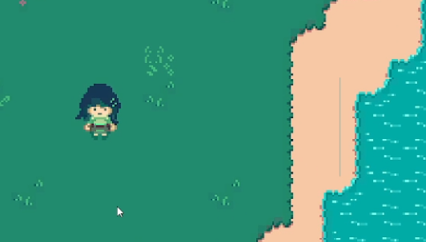
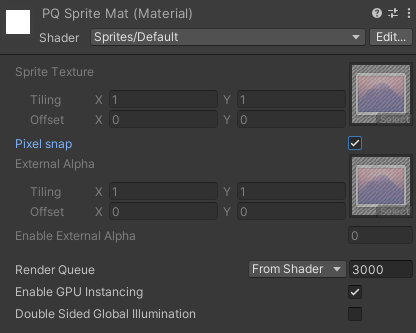

The first two weeks, Project Quest Programming focused on onboarding and initial assignments. We went over Jira, Confluence, and Bitbucket for new members, and then got our assignments after the studio kickoff meeting. I was assigned two tasks for the first week, two tasks for the second week, and one for the third week.
Dummy enemy
Here is where the first miscommunication I encountered happened. I (and the rest of the programming team) were under the impression that battles would work like they do in Undertale. The project programming lead had ported some code before the Studio was formed from her 494 P2 which fit the Undertale battle use case fairly closely. It feaured an animation system to spawn the enemy's attack objects, as well as an arena for the player icon and a basic implementation of a battle, with some exposed configuration. The Project Quest designers decided that Quest battles feature a flipped format compared to Undertale, where enemy attacks are a simple animation and a dice roll, while player attacks enter the player into a minigame, the success of which determines if the player's attack hits and how much damage it does. I completed my onboarding assignment to implement a simple boxing glove dummy enemy before I was made aware of this change, so unfortunately none of the work I did here can be reused for real enemies.
Conversation Tutorial Enemy
This is the first enemy in the game, and serves to introduce the player to how the battle system works. Currently, we do not have a proper name for this character. Its functionality is very simple: It has one attack, "Rage," which has a 90% hit rate. I did some refactoring of the enemy and enemy attack system to support this use case.
Developers can create a prefab that has an instance of the EnemyAttack script attached to it. On it, the developer can set flags, such as the attack damage range, the name of the attack, and the chance of the attack landing. There is also a slot for an AnimatorController so that animations may be played for each of the hit, miss, and other states, but it is currently unused until we get a clearer idea from Design and Art about how enemy attack animations should look. At present, the game only logs the attack events into the console. The enemy has a special condition where if the player keeps the enemy "calm" (by using their Calming attack), the player will win the battle and get a special award. Since a different programmer is working on the framework for this feature, and their work has not been merged yet, I have paused work on the tutorial enemy until that becomes available.
Fixing Render Artifacts
By default, Unity spritesheets suffer an artifacting issue where vertical and horizontal lines appear between tiles. They flash rapidly, making them very distracting for the player.
This issue occurs even if all of the tiles are part of the same object. The reason for this behavior has to do with how hardware samplers on the GPU work. Unity implements 2D the same way it implements 3D, the only difference being the camera rotation locked to one axis. All of the texture reading mechanisms are the same, whether the game is 2D or 3D. Hardware samplers take normalized floating point values ([0,1]) to determine the position on the input texture. This is a useful behavior because it means that the texture can be any resolution, and the shader code does not need to know the size of the texture. However, for pixel art games, this becomes a problem, because floating point error in the calculation of the normalized UV coordinate can place the sampler offset slightly off the edge of an item on the sprite sheet. When such an error occurs, the sampler will read values from the neighboring tile.
Fortunately, Unity has a solution to this issue built in, but it is neither intuitive nor easy to find. The first part of the solution is to disable anti-aliasing in project settings. This helps reduce the error if the project was using Multisample anti aliasing (and also can marginally improve performance), but it does not eliminate the issue. The key change is to create a copy of the default sprite material, but enable Pixel Snap. Because Unity is closed source I cannot verify exactly what this setting does, but my guess would be that this setting adds additional rounding code to the shader to ensure that the sampler source position aligns to the input texture. With it enabled, the artifacting issue is fixed. Level artists need to be aware of this material and manually set it on every sprite they make, which is annoying, so in the comming weeks I will look for a way to make my material the default for all newly created sprite objects.

Player Counter Attack
This minigame involves the player parrying swords which home in on the player. If the player parries them, then their attack on the main enemy of the battle succeeds. I began work on this, implementing the basic prefab and starting on the minigame handler script, but decided to pause since I did not understand the proper way I was meant to test minigames. Since it was getting late on Saturday, I decided that I would inquire about this at the next Studiowide meeting on Sunday. At that meeting, I gained clarification about how I should implement it, so I proceeded. The minigame now spawns axes (placeholder artwork) that arc away from the combat box before falling into it towards the player. This allows the player to dodge incoming axes that they aren't able to parry in that moment, with the axes circling back around for another attempt. The game actually runs a basic custom gravity simulation to do this, with all of the parameters exposed in the editor so that the design team can tweak it.
Playing the Case Study Since my tasks did not take up the whole time for this week, I spent the remainder of the time playing Deltarune, the case study for Project Quest. I downloaded it on my Switch and immediately noticed one (minor) problem: it is letterboxed on all four sides. Because the Switch's screen is not very big, it made the game output even smaller. Supposedly the reason for this is that GameMaker (the engine used to make Deltarune) does not provide any facilities for making resize easy, so games made in it typically don't handle resize at all. Even just a simple bitmap scale of the final rendertarget really should be an engine-provided feature, that way the game could at minimum fit the height of the screen it is running on. Since we are developing Project Quest in Unity, which provides many features for implementing adaptive resize, we hopefully will not have this issue.
That nitpick aside, I was struck by how natural the dialog in Deltarune is at adapting to what you do. I know that the dialog is all prewritten, but it doesn't feel like that at all when playing it. I purposefully did the wrong things and every time the game had some quip that fit right in with what I was trying to do. Eventually you always hit a loop on whatever dialog tree branch you're on at that moment, but some of the branches are surprisingly deep. GameMaker also does not have any facilities for making dialog easy either, so I am very impressed by the level of dedication the developers put into the game's dialog system. It really makes the characters feel alive. The game easily sucked me in and time passed quickly.
| Task | Programming | Communicating | Researching | Task Total |
|---|---|---|---|---|
| Meetings | – | 4h | – | 4h |
| Onboarding | 2h | 1h | – | 3h |
| Conversation Tutorial Enemy | 2h | 1h | 2h | 5h |
| Player Counter Attack | 2h | 1h | 1h | 4h |
| Fixing render artifacts | 1h | 1h | 2h | 4h |
| Playing the case study | – | – | 4h | 4h |